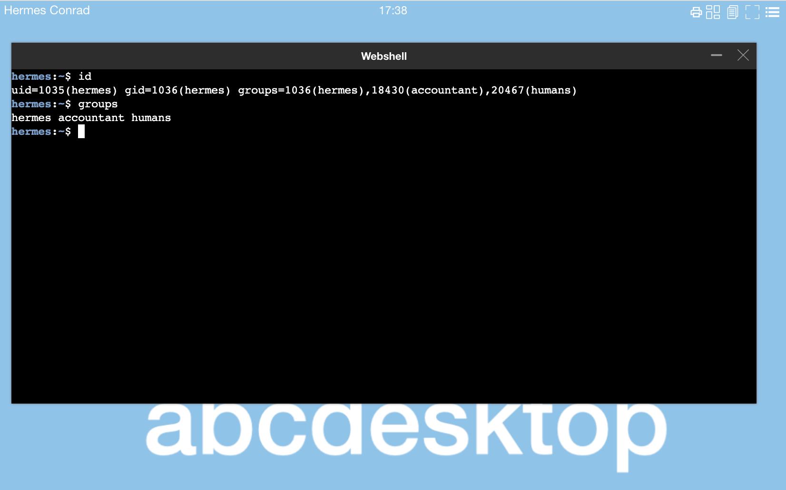
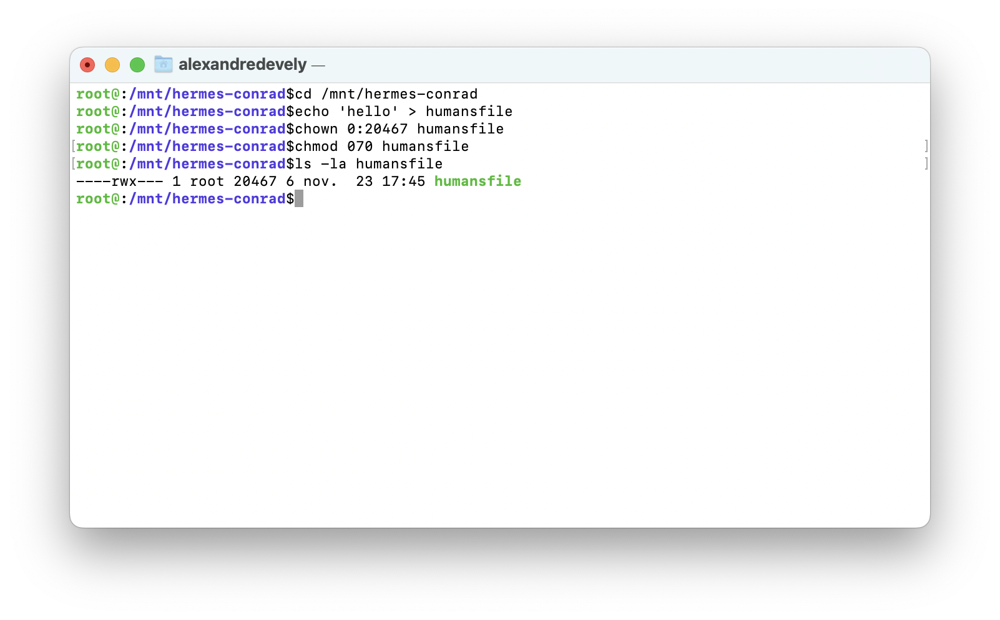
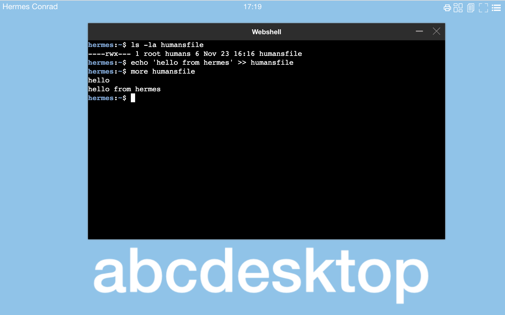

The multiple groups features for RFC 2307 support
Let talk about a common features with multiple groups and user securityContext on pods
context
- Use ldap auth like in sample config
ou=people,dc=planetexpress,dc=com - Use groups
gidNumberanduidNumber - Use filesystem access right
Goal
- Use the kubernetes supplemental groups support
- Define accounts in ldap directory service to get
supplementalGroupssupport
Check the kubernetes supplementalGroups support
Let's create a yaml file to define pod with securityContext and supplementalGroups
apiVersion: v1
kind: Pod
metadata:
name: security-context-supplementalgroups-demo
spec:
securityContext:
runAsUser: 1000
runAsGroup: 3000
supplementalGroups: [2000,4000,5000,6000]
volumes:
- name: sec-ctx-vol
emptyDir: {}
containers:
- name: sec-ctx-demo
image: busybox:1.28
command: [ "sh", "-c", "sleep 1h" ]
volumeMounts:
- name: sec-ctx-vol
mountPath: /data/demo
securityContext:
allowPrivilegeEscalation: false
Create the pod security-context-supplementalgroups-demo
$ kubectl create -f https://raw.githubusercontent.com/abcdesktopio/conf/main/kubernetes/security-context-supplementalgroups-demo.yaml
The pod is created
pod/security-context-supplementalgroups-demo created
Test the id command, you get the list uid=1000 gid=3000 groups=2000,4000,5000,6000
$ kubectl exec -it pod/security-context-supplementalgroups-demo -- id
uid=1000 gid=3000 groups=2000,4000,5000,6000
Run the group command inside the pod
$ kubectl exec -it pod/security-context-supplementalgroups-demo -- groups
The result exit with code 1. The groups do not exist in /etc/group
3000groups: unknown ID 3000
2000groups: unknown ID 2000
4000groups: unknown ID 4000
5000groups: unknown ID 5000
6000groups: unknown ID 6000
command terminated with exit code 1
This is what you want to do with abcdesktop, the id numbers are replaced by strings. The uid, gid and supplementalgroups are read from posixAccount and posixGroup in the directory service.
Read .spec.securityContext from a pod
kubectl command to read .spec.securityContext
kubectl get pod/security-context-supplementalgroups-demo -o json | jq '.spec.securityContext'
You read as output
{
"runAsGroup": 3000,
"runAsUser": 1000,
"supplementalGroups": [
2000,
4000,
5000,
6000
]
}
Accounts description
- defined a user in the LDAP series
The complete ldif file can be downloaded at the end of this page.
The ldif set :
- organizationalUnit
people:ou=people,dc=planetexpress,dc=com - organizationalUnit
groups:ou=groups,dc=planetexpress,dc=com
Create a posixAccount : cn=hermes,ou=people,dc=planetexpress,dc=com
- gidNumber: 1036
- uid: hermes
- uidNumber: 1035
Create a posixGroup for hermes : cn=hermes,ou=groups,dc=planetexpress,dc=com
- objectClass:
posixGroup - objectClass:
top - cn:
hermes - gidNumber:
1036
Create a posixGroup : cn=accountant,ou=groups,dc=planetexpress,dc=com
- cn:
accountant - gidNumber:
18430 - memberUid:
hermes
Create a posixGroup cn=humans,ou=groups,dc=planetexpress,dc=com
- gidNumber:
20467 - memberUid:
fry - memberUid:
hermes
Login to abcdesktop
Login to abcdesktop as Hermes Conrad account
Inside the user pod, the unix group file contains :
cat /etc/group
hermes:x:1036:
humans:x:20467:hermes,fry
accountant:x:18430:hermes
This is correct.
The user's pod is defined with a securityContext
In this example you can replace hermes-d1411d93-8922-4c33-81d7-3c085f381a27 by your own pod's name
kubectl get pods hermes-d1411d93-8922-4c33-81d7-3c085f381a27 -n abcdesktop -o json| jq '.spec.securityContext'
You can read on stdout
{
"runAsGroup": 1036,
"runAsUser": 1035,
"supplementalGroups": [
20467,
18430
]
}
This is correct.
supplementalGroupsdefines the others groups from LDAP for DN:cn=hermes,ou=groups,dc=planetexpress,dc=com
Inside the user pod run the id command

hermes:~$ id
uid=1035(hermes) gid=1036(hermes) groups=1036(hermes),18430(accountant),20467(humans)
hermes:~$ groups
hermes accountant humans
hermes:~$
This is correct.
Create new file on host
The default home directory in od.config is a volume hostPath set to /tmp
desktop.homedirectorytype: 'hostPath'
desktop.hostPathRoot: '/tmp'
On your host server, get a shell with as root account, create a file humansfile with restricted access to member of humans group.

cd /mnt/hermes-conrad
echo 'hello' > humansfile
chown 0:20467 humansfile
chmod 070 humansfile
Check the owner and group of the new file humansfile
ls -la humansfile
----rwx--- 1 root 20467 6 nov. 23 17:16 humansfile
Check inside the user pod check that hermes account can write data in the new file humansfile.
This is correct
hermesis member ofhumansgroup.

hermes:~$ ls -la humansfile
=======
- memberUid: `hermes`
Inside the user pod, the unix group file contains :
```bash
cat /etc/group
hermes:x:1036:
humans:x:20467:hermes,fry
accountant:x:18430:hermes
This is correct.
The user's pod is defined with a securityContext
'securityContext': {
'runAsUser': 1035,
'runAsGroup': 1036,
'supplementalGroups': [20467, 18430]
}
This is correct.
supplementalGroupsdefines the others groups from LDAP
Inside the user pod run the id command
hermes:~$ id
uid=1035(hermes) gid=1036(hermes) groups=1036(hermes),18430(accountant),20467(humans)
hermes:~$ groups
hermes accountant humans
hermes:~$
This is correct.
Create new file on host
The default home directory in od.config is a volume hostPath set to /tmp
desktop.homedirectorytype: 'hostPath'
desktop.hostPathRoot: '/tmp'
On your host server, using a root account, create a file humansfile with restricted access to member of humans group.
cd /mnt/hermes-conrad
echo 'hello' > humansfile
chown 0:20467 humansfile
chmod 070 humansfile
Check the owner and group
ls -la humansfile
----rwx--- 1 root 20467 6 nov. 23 17:16 humansfile
Check inside the user pod check that hermes account can to write data in file humansfile, because hermes is member of humans group.
hermes:~$ ls -la humansfile
>>>>>>> 612b52bcffb502a9d934c0cbba40a43d553fc731
----rwx--- 1 root humans 6 Nov 23 16:16 humansfile
hermes:~$ echo 'hello from hermes' >> humansfile
hermes:~$ more humansfile
hello
hello from hermes
<<<<<<< HEAD
hermes:~$
This is correct.
We describe a common features with multiple groups and user securityContext on pods and abcdesktop support multiple groups with posixGroup define in RFC2307.
LDAP ldif dump
To get more details about the ldif and ldap datas, you can download the ldif file planetexpress.
version: 1
=======
hermes:~$
This is correct.
We describe a common features with multiple groups and user securityContext on pods and abcdesktop support multiple groups with posixGroup define in RFC2307.
ldif dump
To get more details about the ldif and ldap datas, you can download the ldif file planetexpress.
version: 1
>>>>>>> 612b52bcffb502a9d934c0cbba40a43d553fc731
dn: dc=planetexpress,dc=com
objectClass: dcObject
objectClass: organization
objectClass: top
dc: planetexpress
o: Planet Express, Inc.
dn: ou=people,dc=planetexpress,dc=com
objectClass: organizationalUnit
objectClass: top
ou: people
description: Planet Express crew
dn: cn=Hermes Conrad,ou=people,dc=planetexpress,dc=com
objectClass: inetOrgPerson
objectClass: organizationalPerson
objectClass: person
objectClass: posixAccount
objectClass: top
cn: Hermes Conrad
gidNumber: 1036
homeDirectory: /home/hermes
sn: Conrad
uid: hermes
uidNumber: 1035
description: Human
employeeType: Accountant
employeeType: Bureaucrat
givenName: Hermes
mail: hermes@planetexpress.com
ou: Office Management
dn: ou=groups,dc=planetexpress,dc=com
objectClass: organizationalUnit
objectClass: top
ou: groups
dn: cn=fry,ou=groups,dc=planetexpress,dc=com
objectClass: posixGroup
objectClass: top
cn: fry
gidNumber: 1025
memberUid: fry
dn: cn=humans,ou=groups,dc=planetexpress,dc=com
objectClass: posixGroup
objectClass: top
cn: humans
gidNumber: 20467
memberUid: fry
memberUid: hermes
dn: cn=hermes,ou=groups,dc=planetexpress,dc=com
objectClass: posixGroup
objectClass: top
cn: hermes
gidNumber: 1036
dn: cn=accountant,ou=groups,dc=planetexpress,dc=com
objectClass: posixGroup
objectClass: top
cn: accountant
gidNumber: 18430
memberUid: hermes